Buen trato y convivencia
Promovemos relaciones basadas en el respeto, el diálogo, la inclusión y la resolución pacífica de las dificultades de convivencia.
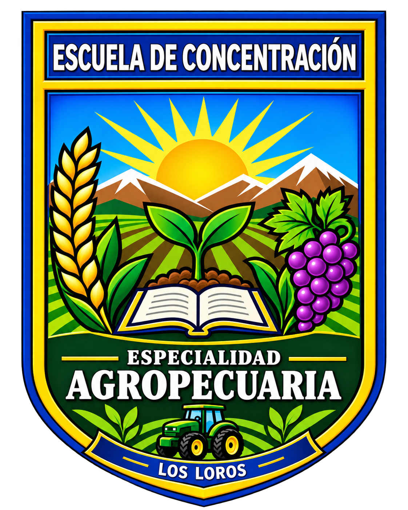
Agropecuaria con mención Agrícola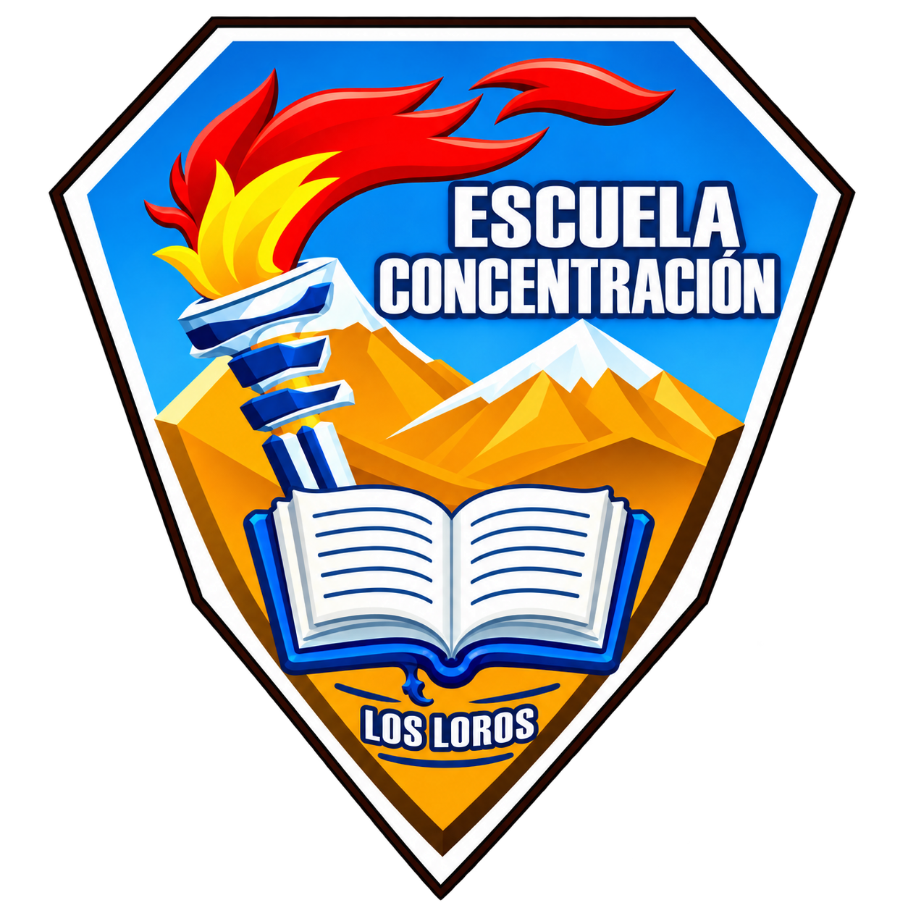
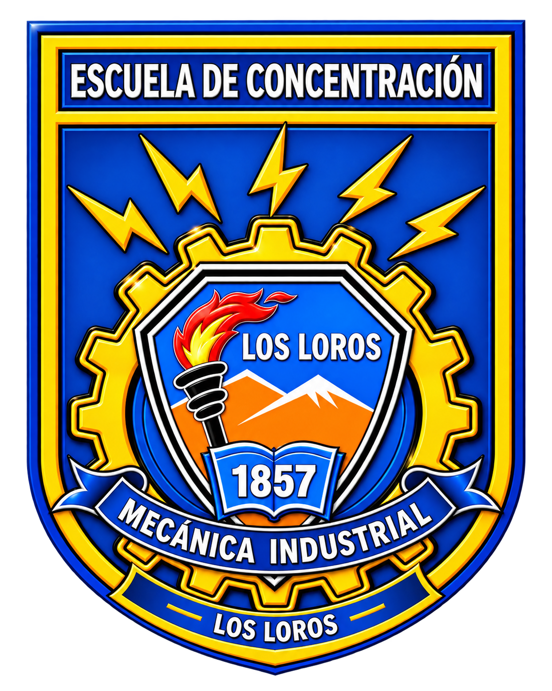
Mecánica Industrial con mención Mantenimiento ElectromecánicoEducación desde NT1 hasta Formación Técnico Profesional
Excelencia Académica 2026–2027
Educando desde 1857, con identidad territorial, inclusión, formación integral y una propuesta Técnico Profesional vinculada al futuro de nuestros estudiantes.
Accede directamente a los servicios e información más utilizados.
Un espacio para compartir contenidos audiovisuales con nuestra comunidad educativa. Presiona reproducir para ver el video directamente aquí.
Ver video directamente en VimeoElige una vez tu perfil. Este dispositivo recordará tus accesos más útiles.
Consejos, orientaciones y contenidos útiles para estudiantes, familias y funcionarios.
Cargando publicaciones de interés...
Un espacio de orientación para promover el buen trato, la prevención, el bienestar y la participación de toda nuestra comunidad educativa.
Promovemos relaciones basadas en el respeto, el diálogo, la inclusión y la resolución pacífica de las dificultades de convivencia.
Si un estudiante o familia necesita orientación, puede recurrir al establecimiento para recibir acompañamiento y conocer el conducto correspondiente.
Favorecemos el autocuidado, la comunicación respetuosa, la participación y la búsqueda oportuna de apoyo cuando sea necesario.
Los estudiantes, madres, padres, tutores y apoderados pueden acercarse al Equipo de Convivencia Educativa cuando necesiten orientación, apoyo o acompañamiento ante situaciones relacionadas con la convivencia y el bienestar escolar.
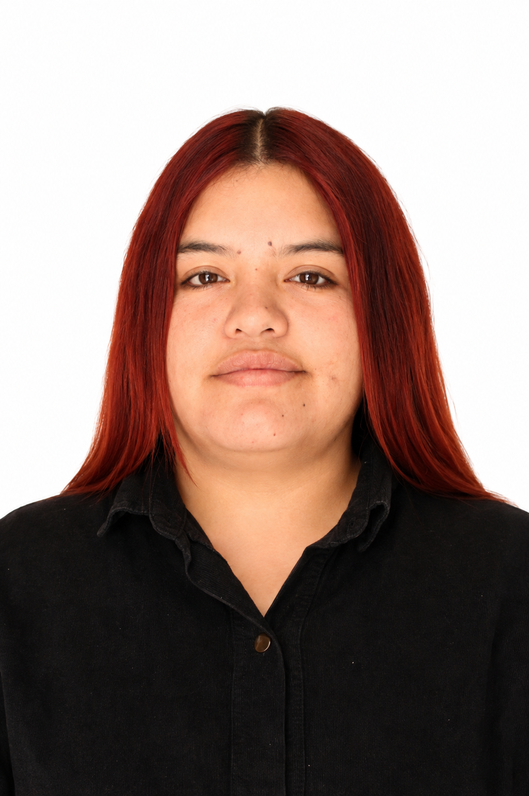
Puedes acercarte personalmente al equipo para recibir orientación. Las situaciones particulares se abordan de acuerdo con los procedimientos internos del establecimiento.
Este espacio entrega orientación general. Las situaciones particulares se gestionan mediante los procedimientos y protocolos vigentes del establecimiento.
Buscando el comunicado más reciente del establecimiento.
Ponemos a disposición de nuestra comunidad educativa la Cuenta Pública del establecimiento.
Puede leer el documento directamente en esta página o abrirlo completo en una pestaña independiente.
Presione el botón para visualizar la Cuenta Pública.
Ponemos a disposición de madres, padres y apoderados los accesos directos a los sistemas oficiales utilizados para realizar procesos de postulación, matrícula y continuidad de estudiantes.
Seleccione la opción que corresponda al proceso que necesita realizar.
Utilice este sistema para conocer y participar en los procesos de admisión escolar correspondientes a establecimientos educacionales.
Ingresar al Sistema de Admisión EscolarAcceso directo al sistema de registro para apoderados que necesitan solicitar una vacante o realizar el proceso correspondiente.
Ingresar a Anótate en la ListaImportante: Estos accesos corresponden a plataformas externas oficiales. La Escuela de Concentración Los Loros no administra directamente dichos sistemas.
Conoce nuestras actividades, experiencias y logros más recientes.
Actividades, experiencias y logros que vivimos como comunidad educativa.
Cargando noticias de nuestra escuela…
Información importante para nuestra comunidad educativa.
Cargando el último comunicado disponible...
📄 Ver último comunicadoRevisa los comunicados publicados anteriormente.
Cargando comunicados disponibles...
Conoce nuestra identidad, trayectoria y propósito educativo.
La Escuela de Concentración de Los Loros comenzó a funcionar en el año 1857, formando parte de la historia educacional de la localidad y del desarrollo de la educación pública en nuestro país.
Actualmente es un establecimiento educacional de dependencia del Servicio Local de Educación Pública de Atacama, que atiende los niveles de Educación Parvularia, Educación Básica y Educación Media Técnico Profesional.
El establecimiento cuenta con las especialidades de Técnico en Agropecuaria con mención Agrícola y Técnico en Mecánica Industrial, además de una tercera jornada destinada a personas adultas que buscan completar su proceso de educación formal.
La escuela también cuenta con Proyecto de Integración Escolar, apoyando de manera sistemática a estudiantes con necesidades educativas especiales y promoviendo una educación inclusiva.
Ser una comunidad educativa inclusiva, segura y con identidad territorial, que reconozca la diversidad como una fortaleza y cultive el buen trato como base esencial para una sana convivencia, proyectándose como un espacio formativo que garantiza trayectorias educativas de calidad, desde el nivel NT1 hasta la formación técnico-profesional, formando personas íntegras, conscientes de su aporte a la sociedad, preparadas para enfrentar desafíos del mundo laboral o de la educación superior.
Formar una educación inclusiva y segura, desde el nivel NT1 hasta la formación técnico profesional, estimulando el acceso a la educación superior, el buen trato y el respeto mutuo, siendo pilares fundamentales para la formación integral de todos los estudiantes. Por medio de un proyecto educativo centrado en la equidad, potenciando trayectorias educativas de calidad, desarrollando competencias que les permitan desenvolverse con autonomía y compromiso en la sociedad, fortaleciendo la vinculación con la comunidad y los espacios productivos.
Una expresión de identidad y pertenencia que acompaña la memoria de generaciones de nuestra comunidad educativa.
Escucha el himno desde nuestra pagina. Si el reproductor no se muestra en tu dispositivo, puedes abrir el video directamente en YouTube.
Entre valle y montaña resuena
jubilosa la viva canción,
con un bello saludo a la escuela,
casa y templo de la educación.
Bajo ella nuestra alma se enciende,
bajo su aroma de luz y unidad,
donde se anidan virtud y valores,
la conquista de un gran ideal.
Fronteriza, escuela querida,
dulce alero de paz y de bien,
aula eterna de nobles virtudes,
del trabajo, de ciencia y saber.
Juventud fronteriza, adelante,
la sublime tarea a seguir:
construir la grandeza de Chile,
por la senda de gloria seguir.
Noble escuela de buenos maestros,
los que nunca se olvidarán;
en los pechos, fértil semilla,
como un faro de luz brillará.
Fronteriza, escuela querida,
dulce alero de paz y de bien,
aula eterna de nobles virtudes,
del trabajo, de ciencia y saber.
Una trayectoria educativa que acompaña a la comunidad de Los Loros desde 1857.
Comienza la historia educativa del establecimiento en Los Loros.
Recibe esta denominación, que mantiene hasta el 30 de junio de 1978.
El profesor Alexis Herrera impulsa la Primera Banda de Guerra Comunal, antecedente histórico de la actual Banda Escolar Alexis Herrera.
Se aplican planes y programas especiales orientados a la formación en oficios.
Se impulsa un proyecto de innovación curricular vinculado a la viticultura y tecnificación del parronal escolar, fortaleciendo la relación entre educación y territorio.
Se incorpora el régimen de Jornada Escolar Completa.
El establecimiento obtiene desempeño destacado en el sistema de evaluación.
Se renueva el Reconocimiento Oficial y se amplía la enseñanza a Educación Media Diurna y Nocturna.
Egresa la primera promoción de Enseñanza Media Técnico Profesional de la mención Agrícola.
Se firma el Convenio de Igualdad de Oportunidades y Excelencia Educativa.
Se aprueban los Planes de Mejoramiento Educativo del establecimiento.
Se reformula el Proyecto Educativo Institucional y se proyecta una nueva especialidad de Mecánica Industrial con mención Mantenimiento Electromecánico.
Se implementa la formación en Mecánica Industrial con mención Mantenimiento Electromecánico y se amplía la Tercera Jornada para población adulta.
El establecimiento obtiene Excelencia Académica.
Entra en funcionamiento Opción 4 Laboral, ampliando la propuesta educativa inclusiva del establecimiento.
Historias de personas cuyo compromiso, vocación y trayectoria forman parte de la memoria de la Escuela de Concentración Los Loros.
Este espacio reconoce a personas especialmente significativas para nuestra memoria institucional. Alexis Herrera mantiene un lugar central por la profundidad y permanencia de su legado en la escuela y en Los Loros.
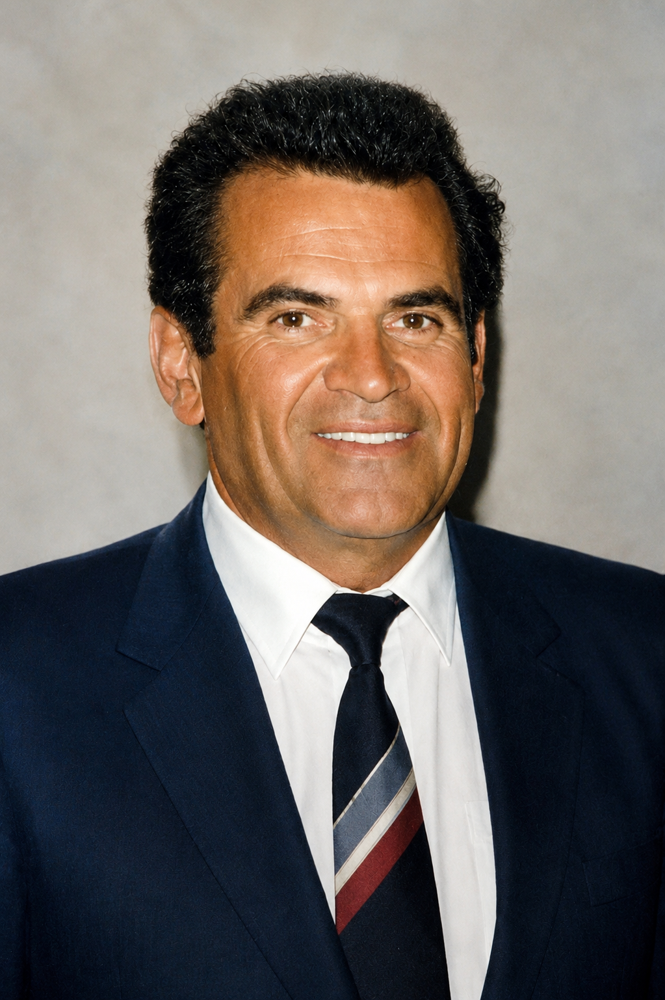
Profesor Normalista · Director
Educador y gestor comunitario
Profesor Normalista egresado en 1960, desarrolló una extensa labor educativa y comunitaria vinculada a Los Loros. Su trayectoria estuvo estrechamente relacionada con el crecimiento del establecimiento, la atención de estudiantes de sectores rurales y cordilleranos y una educación conectada con las necesidades del territorio.
Su legado también se proyectó hacia la formación cívica y la educación vinculada a la agricultura. Una de sus expresiones más visibles continúa actualmente en la Banda Escolar Alexis Herrera.
Docentes, directivos y funcionarios cuyas trayectorias forman parte de la historia y memoria de nuestra comunidad educativa.
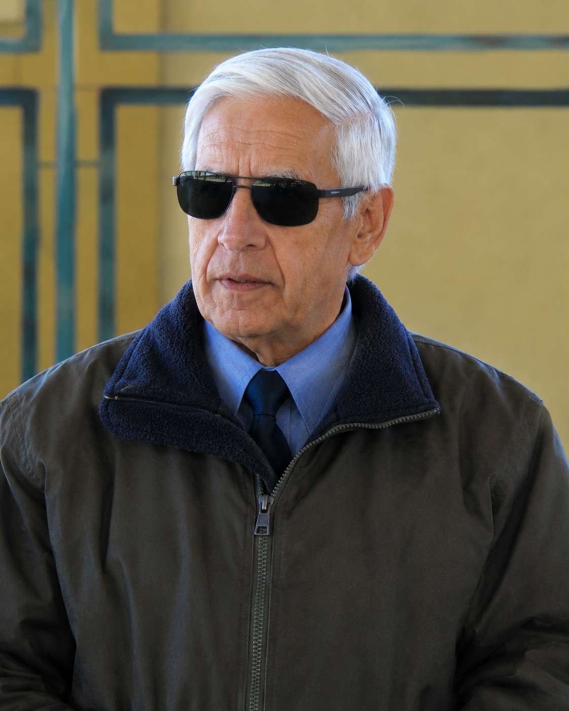
Profesor de Matemáticas · Inspector General
Recordado profesor de Matemáticas que posteriormente asumió responsabilidades de liderazgo como Inspector General.
Romaldo desarrolló parte importante de su trayectoria en la Escuela de Concentración D-43 Los Loros. Desde la enseñanza de Matemáticas pasó posteriormente a integrar el cuerpo directivo como Inspector General, acompañando la organización y vida institucional del establecimiento.
Registros de gestión educacional documentan su desempeño en Inspectoría General con resultado Destacado. Su recuerdo permanece en la memoria de generaciones de estudiantes y funcionarios.
Descansa en el Cementerio Parque de Copiapó.
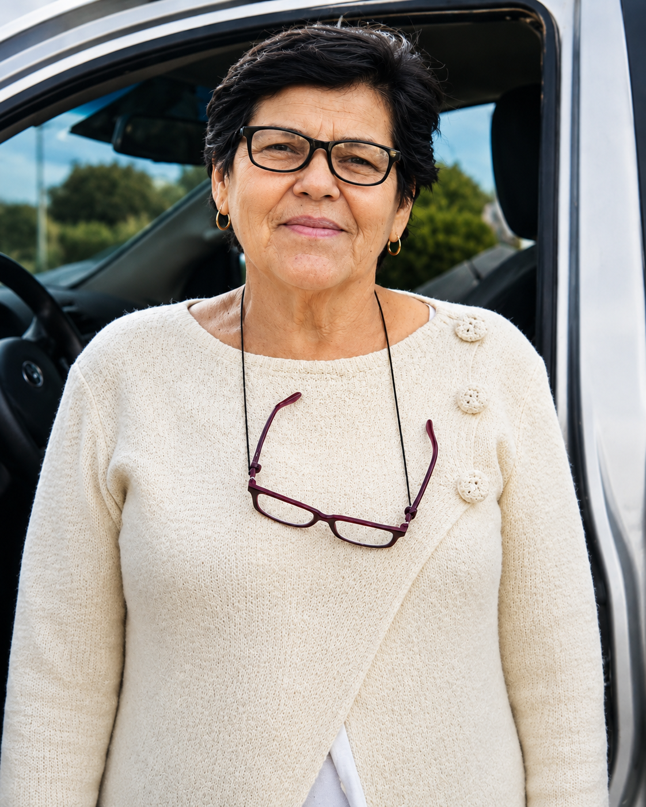
Profesora · Educadora de generaciones de Los Loros
Docente profundamente vinculada a la comunidad de Los Loros y recordada por generaciones de estudiantes y familias.
Su labor educativa forma parte de la memoria de la localidad. Registros históricos de la escuela conservan experiencias pedagógicas desarrolladas por la profesora María Órdenes con estudiantes de Educación Básica.
Su legado trascendió las aulas: como reconocimiento a una profesora que educó a distintas generaciones del sector, la Delegación Municipal de Los Loros recibió posteriormente el nombre María Órdenes Latorre.
Descansa en el cementerio de su querido pueblo de Los Loros.
Profesor de Historia y Geografía · Exdirector
Desarrolló una trayectoria vinculada a la escuela desde la docencia hasta asumir responsabilidades de gestión y Dirección.
Profesor de Historia y Geografía, ejerció labores docentes y posteriormente funciones de gestión hasta asumir como Director de la Escuela de Concentración D-43 Los Loros. Durante su período directivo acompañó procesos de fortalecimiento institucional y de la Educación Media Técnico Profesional. Posteriormente continuó su trayectoria en cargos directivos fuera del establecimiento.
Exdirector de la Escuela de Concentración D-43 Los Loros
Dirigió el establecimiento durante una etapa de consolidación y ampliación de su oferta educativa.
Ramón Barraza Araya ejerció como Director de la Escuela de Concentración D-43 Los Loros. Su gestión se vincula a una etapa en que el establecimiento consolidó una oferta educativa amplia, integrando Educación Parvularia, Básica, Media Técnico Profesional, integración escolar y educación de adultos.
Profesora de Inglés · Primera Jefa de UTP de Enseñanza Media
Cumplió un papel pionero en la organización académica de la Enseñanza Media del establecimiento.
Profesora de Inglés, fue la primera Jefa de la Unidad Técnico-Pedagógica de Enseñanza Media, formando parte del proceso de consolidación de este nivel educativo en la escuela.
Profesora
Más de 40 años de trayectoria docente en la comuna de Tierra Amarilla y una etapa de servicio vinculada al establecimiento a partir de aproximadamente 2018.
Su extensa trayectoria como profesora supera las cuatro décadas de servicio en la comuna de Tierra Amarilla. A partir de aproximadamente 2018 desarrolló parte de su labor en la Escuela de Concentración D-43 Los Loros.
Profesora Generalista de Educación Básica
Durante años acompañó la formación de distintas generaciones de estudiantes como profesora generalista, desarrollando especialmente clases de Religión e Historia.
Durante una extensa etapa formó parte de la comunidad educativa de la Escuela de Concentración D-43 Los Loros como profesora generalista de Educación Básica. A lo largo de su trayectoria impartió distintas asignaturas, desarrollando especialmente clases de Religión e Historia. Su presencia cotidiana en las aulas, el acompañamiento a sus estudiantes y los años compartidos con distintas generaciones forman parte de la memoria y de la historia del establecimiento.
Profesora Generalista de Educación Básica
Durante años participó en la formación de distintas generaciones como profesora generalista, desarrollando especialmente su labor en el área de Lenguaje.
Por años formó parte del equipo docente de la Escuela de Concentración D-43 Los Loros como profesora generalista de Educación Básica. Durante su trayectoria impartió distintas asignaturas, desarrollando especialmente su labor en el área de Lenguaje. Su presencia en las aulas y su prolongada vinculación con la comunidad educativa hicieron que su nombre quedara asociado a una etapa importante de la historia y la memoria del establecimiento.
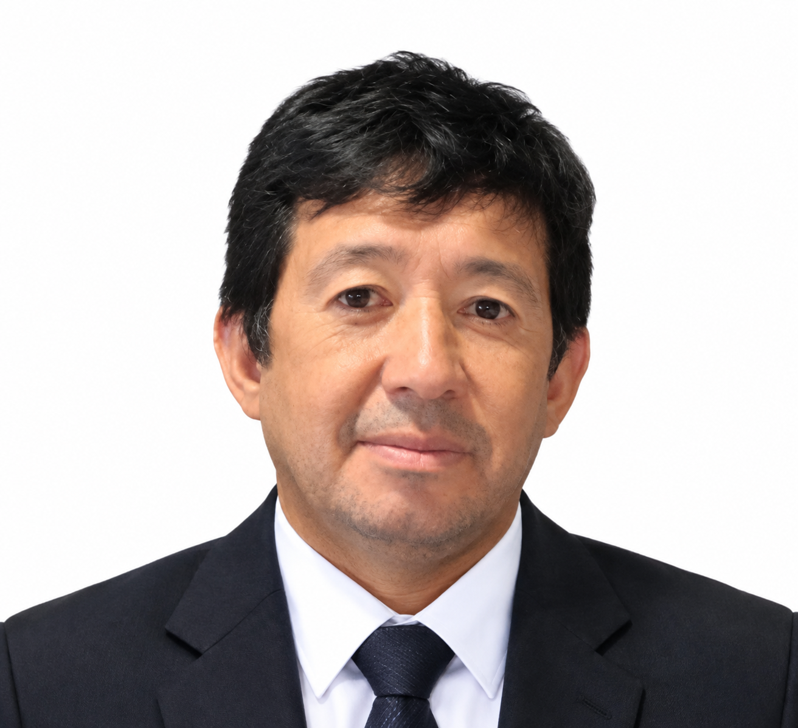
Profesor de la especialidad Agropecuaria
Uno de los primeros docentes de la formación agropecuaria.
Uno de los primeros docentes de la formación agropecuaria
Seferino Urriche Valladares forma parte de la historia de la formación técnico-profesional de la Escuela de Concentración D-43 Los Loros, siendo uno de los primeros profesores de la especialidad Agropecuaria.
Su trayectoria se vincula con una etapa especialmente significativa para la escuela, en la que la educación comenzó a fortalecer su relación con la actividad agrícola y con las características productivas del territorio.
Como docente de la especialidad Agropecuaria, contribuyó a la formación de estudiantes en un área estrechamente relacionada con la identidad de Los Loros y con la actividad agrícola desarrollada históricamente en el valle.
Su aporte forma parte de la memoria de aquellos profesores que acompañaron los primeros pasos de la formación técnico-profesional agropecuaria, transmitiendo conocimientos y experiencias vinculadas al trabajo de la tierra y a las posibilidades de desarrollo de los jóvenes de la localidad.
Su compromiso con Los Loros también se ha proyectado hacia la vida comunitaria y cultural. En 2009 participó como fundador y director del Grupo Folclórico Tricahue de Los Loros, agrupación integrada por niños, jóvenes y adultos, dedicada principalmente a la cueca y a otras expresiones del folclore.
De esta manera, su trayectoria reúne dos dimensiones profundamente vinculadas con la identidad local: la educación y el compromiso con la comunidad.
Un profesor que fue parte de los primeros pasos de la formación agropecuaria y que también ha contribuido a mantener vivas las tradiciones culturales de Los Loros.
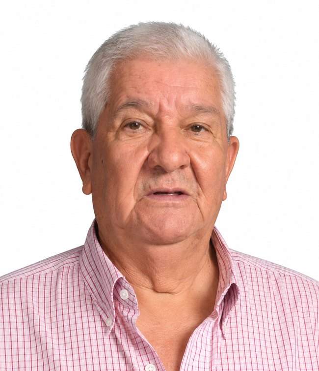
Auxiliar del establecimiento
Durante más de tres décadas acompañó la vida cotidiana de la escuela con responsabilidad, constancia y un profundo compromiso con su comunidad.
Más de tres décadas al servicio de la Escuela de Concentración D-43 Los Loros
Durante más de 30 años, Hernán Pastenes Rojas fue una presencia inseparable de la vida cotidiana de la Escuela de Concentración D-43 Los Loros. Desde su labor como auxiliar, acompañó con responsabilidad y dedicación el funcionamiento del establecimiento, convirtiéndose en un rostro conocido y cercano para distintas generaciones de estudiantes, docentes y funcionarios.
Su trabajo representaba mucho más que el cumplimiento de una función. Durante años fue la primera persona que abría las puertas de la escuela al comenzar el día y la última que las cerraba al finalizar la jornada, una imagen sencilla pero profundamente representativa del compromiso y la constancia con que desarrolló su labor.
Con disposición, esfuerzo y un profundo sentido de responsabilidad, contribuyó diariamente al cuidado de los espacios y a innumerables tareas esenciales para el funcionamiento del colegio. Su trabajo, muchas veces realizado silenciosamente y lejos del protagonismo, fue fundamental para que cada jornada escolar pudiera comenzar y terminar adecuadamente.
Por más de tres décadas recorrió sus pasillos, patios y dependencias, siendo testigo de innumerables generaciones que pasaron por sus aulas. Estudiantes crecieron, profesores llegaron y se despidieron, y la escuela fue cambiando con los años; mientras tanto, Hernán continuó formando parte de su vida cotidiana.
Su trayectoria representa también a aquellos funcionarios que construyeron la historia del establecimiento desde el servicio, el trabajo constante y el cariño demostrado en las pequeñas acciones de cada día.
Durante más de 30 años abrió las puertas de nuestra escuela cada mañana y fue quien las cerró al terminar la jornada. Hoy, esas puertas guardan también el recuerdo de una vida dedicada al servicio de la comunidad educativa de Los Loros.
Profesor de Mecánica Industrial
Una trayectoria ligada a la formación técnica de Los Loros.
Una trayectoria ligada a la formación técnica de Los Loros
Orlando Acuña Sarria ha desarrollado una extensa trayectoria en el establecimiento. Su labor se vinculó históricamente a la Escuela de Concentración D-43 Los Loros y actualmente continúa formando parte de la Escuela de Concentración Los Loros, desarrollando su labor docente en el área de Mecánica Industrial y contribuyendo a la formación técnico-profesional de distintas generaciones de estudiantes.
Su trabajo estuvo ligado al aprendizaje práctico y al desarrollo de competencias técnicas, acercando a los estudiantes a conocimientos y experiencias relacionadas con la mecánica y el mundo laboral.
Dentro de su trayectoria también destaca su participación en el fortalecimiento de la especialidad, particularmente en las gestiones destinadas a mejorar los espacios y equipamientos necesarios para la formación de los estudiantes.
Su presencia representa el aporte de los docentes que han contribuido al crecimiento de la educación técnico-profesional de la escuela, vinculando la enseñanza con las necesidades y oportunidades del territorio.
Una trayectoria marcada por la enseñanza, la formación práctica y el compromiso con los estudiantes de Los Loros.
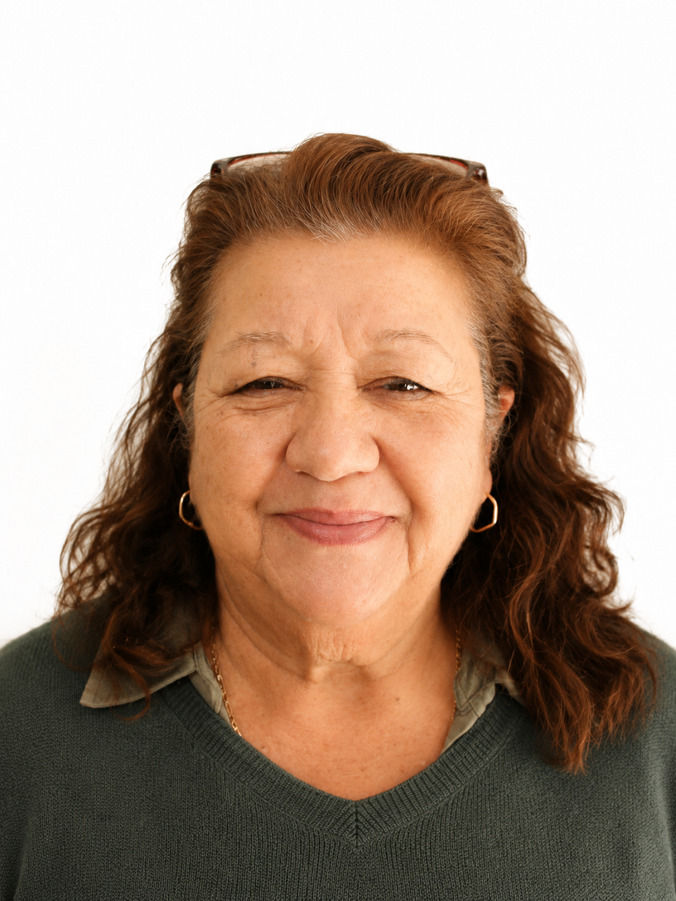
Secretaria del establecimiento
Una trayectoria de continuidad institucional que enlaza distintas etapas de la historia reciente de la escuela.
Elizabeth Maldonado Roche ha desarrollado una extensa trayectoria como secretaria del establecimiento, vinculada desde la etapa de la Escuela de Concentración D-43 Los Loros y desempeñando este cargo durante los períodos de dirección de Alexis Herrera, Ramón Barraza y Francisco López Merino. En la actualidad continúa ejerciendo la misma función en la Escuela de Concentración Los Loros junto a la actual Dirección del establecimiento, constituyéndose en un importante vínculo de continuidad entre distintas etapas de la historia reciente de nuestra comunidad educativa. A través de los años, su compromiso, dedicación y cariño por el establecimiento se han mantenido intactos, formando parte de la memoria y de la identidad institucional de la escuela.
Una tradición escolar que une generaciones de estudiantes desde 1968.
La tradición se remonta a 1968, cuando el profesor Alexis Herrera impulsó la Primera Banda de Guerra Comunal. Con el paso de las décadas, diferentes generaciones de estudiantes han formado parte de esta expresión de identidad, pertenencia y vida escolar.
Actualmente esta tradición continúa bajo el nombre Banda Escolar Alexis Herrera de la Escuela de Concentración Los Loros.
Quienes alguna vez formaron parte de sus filas hoy contribuyen a mantener viva la tradición y a formar nuevas generaciones.
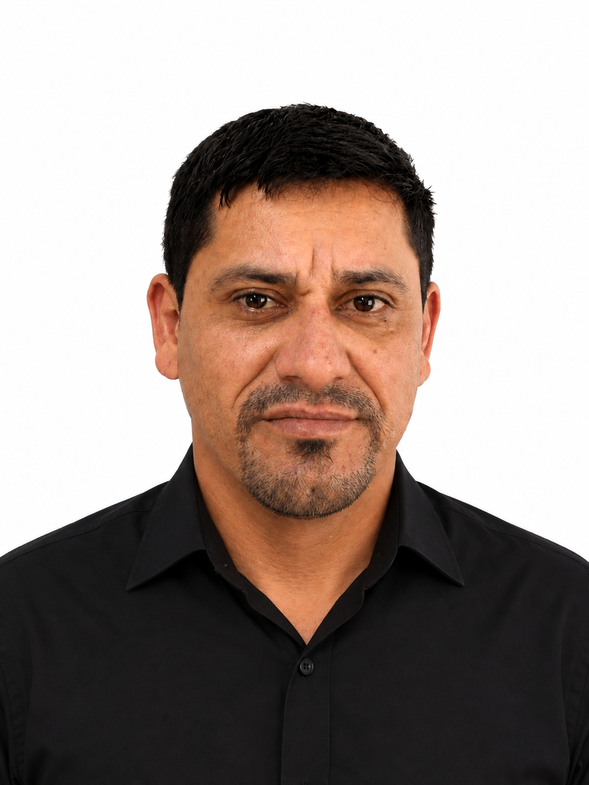
Inspector · Actual líder de la Banda
Exintegrante de la Banda EscolarInspector · Actual líder de la Banda
Exintegrante de la Banda EscolarAyer integrantes. Hoy formadores. Una tradición que se transmite de generación en generación.
Alexis Herrera impulsa la Primera Banda de Guerra Comunal.
Niños, niñas y jóvenes de distintas épocas han dado continuidad a la tradición.
El nombre actual mantiene vivo el vínculo con quien impulsó sus orígenes.
Gonzalo Alaniz C. y Francisco Zepeda B., antiguos integrantes, acompañan hoy a las nuevas generaciones.
Una selección de registros que permite recorrer distintas etapas de esta tradición escolar.
Participación de la Banda Escolar en la conmemoración de las Glorias Navales.
Registros históricos de la Banda Escolar participando en las actividades de Fiestas Patrias.
La tradición musical de la escuela también se conecta con su himno, una expresión de identidad que pertenece a toda la comunidad educativa.
Conoce también la historia de la persona cuyo legado da nombre a nuestra Banda Escolar.
Conoce nuestras especialidades, descubre qué aprenderás y explora las oportunidades que ofrecen para tu futuro.
Presiona las tarjetas para descubrir cada especialidad. Luego explora sus módulos, compara los aprendizajes y encuentra carreras relacionadas con tus intereses.
Descubre nuestras especialidades de Agropecuaria y Mecánica Industrial, sus experiencias de aprendizaje y las oportunidades que ofrece nuestra formación técnico profesional.
Ambas desarrollan habilidades técnicas, trabajo colaborativo y seguridad. La diferencia está en el ámbito productivo y los procesos que se aprenden.
La comparación describe ámbitos de aprendizaje. No significa que alguna especialidad sea mejor que la otra.
Mención Agrícola
Estos son los módulos de formación técnico-profesional que se imparten en 3.º y 4.º medio de nuestro establecimiento.
La formación prepara para participar en la producción agropecuaria y agrícola: preparación y manejo de suelos, riego, reproducción vegetal, control sanitario, manejo de cultivos y frutales, cosecha, postcosecha y mantenimiento básico de equipos. Incluye el registro de información productiva, el uso responsable de recursos y la aplicación de normas de seguridad.
Técnico de Nivel Superior: Técnico Agrícola, Técnico Agropecuario, Producción Agrícola y otras carreras afines.
Carreras profesionales: Agronomía, Ingeniería Agrícola, Ingeniería en Agronomía, Agroindustria y ámbitos relacionados.
Afinidad complementaria: Gastronomía, Ingeniería en Alimentos y otras carreras ligadas al origen, la calidad y la transformación de materias primas.
El campo laboral describe ámbitos posibles; no representa una promesa de contratación. Las carreras mencionadas son orientativas y su oferta, admisión y eventuales convalidaciones dependen de cada institución de educación superior.
Mención Mantenimiento Electromecánico
Estos son los módulos de formación técnico-profesional que se imparten en 3.º y 4.º medio de nuestro establecimiento.
La formación prepara para interpretar planos y manuales técnicos, realizar mediciones y verificaciones, desarrollar operaciones de banco y soldadura y ejecutar labores de mantenimiento de maquinaria. En la mención Mantenimiento Electromecánico se profundiza en el diagnóstico, montaje, reparación y puesta en funcionamiento de sistemas mecánicos, eléctricos, electromecánicos, hidráulicos y neumáticos, respetando normas de seguridad y protección ambiental.
Técnico de Nivel Superior: Técnico en Mecánica Industrial, Mantenimiento Industrial, Mecatrónica y Automatización.
Carreras profesionales: Ingeniería Mecánica, Ingeniería en Mantenimiento Industrial, Ingeniería Electromecánica y Automatización y Control.
Afinidades relacionadas: Electricidad Industrial, Ingeniería en Minas y otras áreas técnicas vinculadas a equipos y procesos industriales.
El campo laboral describe ámbitos posibles; no representa una promesa de contratación. Las carreras mencionadas son orientativas y su oferta, admisión y eventuales convalidaciones dependen de cada institución de educación superior.
La orientación vocacional comienza desde 1.º medio: exploras tus intereses, conoces tus posibilidades y te preparas para elegir. La formación diferenciada de la especialidad se desarrolla en 3.º y 4.º medio.
Selecciona una etapa para descubrir qué ocurre en cada momento.
Reconoces tus habilidades, preferencias e intereses, conversas sobre tu futuro y comienzas a conocer las distintas oportunidades de formación técnico-profesional.
La orientación comienza desde 1.º medio; la elección y el ingreso a la especialidad siguen el proceso establecido por el colegio. La práctica profesional y la titulación están sujetas al reglamento vigente y a los requisitos legales: el título técnico de nivel medio no se obtiene automáticamente al aprobar 4.º medio.
Explora distintas áreas que te llaman la atención. No hay respuestas correctas ni una especialidad obligatoria: esta orientación es un punto de partida para conversar y conocer mejor las dos opciones.
Elige un tema que te llame la atención. Te mostraremos con qué formación se relaciona y podrás explorar sus módulos.
Selecciona una tarjeta para descubrir una conexión con Agropecuaria, Mecánica Industrial o ambas. No existen respuestas correctas ni una única elección.
Busca una carrera que te interese o utiliza los filtros. Por ejemplo, Gastronomía tiene una relación complementaria con Agropecuaria por el origen y la calidad de los alimentos.
Cargando opciones de estudios…
Consulta carreras, instituciones, requisitos y alternativas de educación superior. Los nombres de este explorador son orientativos: no todas las denominaciones corresponden necesariamente a una oferta vigente de una institución.
Orientación vocacional informativa, no diagnóstico ni asignación automática. Una afinidad no garantiza admisión, convalidación de asignaturas ni campo laboral. Siempre puedes optar por carreras distintas a la especialidad cursada.
Información sobre nuestros niveles, modalidades educativas y horarios de clases.
Revisa la hora de ingreso y salida de cada curso. Para consultar las asignaturas y bloques de cada jornada, utiliza el botón «Ver horario de clases».
Primero selecciona el nivel y luego el curso. Mostraremos solamente la información que necesitas.
Selecciona un nivel para comenzar.
Aprender, crear y compartir. Conoce los talleres de nuestra escuela y encuentra nuevas formas de desarrollar tus intereses y habilidades.
Los Talleres JEC son espacios formativos que buscan fortalecer los intereses, habilidades y talentos de nuestros estudiantes mediante experiencias prácticas, creativas y vinculadas con el entorno.
Deporte, sostenibilidad, tecnología, arte y música se reúnen en una misma jornada. Explora las opciones y descubre qué actividades llaman tu atención.
Filtra por tipo de actividad, consulta el docente a cargo y amplía los afiches originales para conocer cada propuesta.
 01 / 06
01 / 06
Movimiento y bienestar
Explora el movimiento, la actividad física y el trabajo en equipo mediante experiencias deportivas.
Descripción orientativa basada en el afiche institucional.
 02 / 06
02 / 06
Cultivo y naturaleza
Acércate al cultivo de plantas y al cuidado del entorno mediante actividades prácticas.
Descripción orientativa basada en el afiche institucional.
 03 / 06
03 / 06
Exploración técnica
Conoce ideas y procesos relacionados con la electricidad, la mecánica y la creación técnica.
Descripción orientativa basada en el afiche institucional.
 04 / 06
04 / 06
Reutilizar y transformar
Promueve el cuidado ambiental y la creatividad mediante la reutilización de materiales.
Descripción orientativa basada en el afiche institucional.
 05 / 06
05 / 06
Arte con conciencia
Experimenta con la creación artística y el uso creativo de materiales reutilizables.
Descripción orientativa basada en el afiche institucional.
 06 / 06
06 / 06
Ritmo y creatividad
Conecta música, percusión y reutilización creativa de materiales.
Descripción orientativa basada en el afiche institucional.
Los talleres forman parte de la Jornada Escolar Completa. Aquí encontrarás sus días y horario general, sin repetirlos en cada tarjeta.
Infórmate sobre la validación de estudios de Enseñanza Básica y Media. Conoce las alternativas generales y descubre cómo solicitar orientación en nuestra escuela.
Selecciona una alternativa para conocer su orientación general. Las condiciones específicas deben confirmarse con el establecimiento.
Consulta qué alternativas de validación corresponden a tu nivel de estudios y qué documentación te solicitarán.
Una orientación general para que sepas qué consultar antes de iniciar cualquier trámite.
Comunícate con la escuela y explica qué nivel o cursos necesitas regularizar.
Confirma si existe una alternativa aplicable a tu situación y qué antecedentes necesitas.
Infórmate sobre inscripción, fechas y procedimiento según la modalidad disponible.
Sigue las orientaciones oficiales que recibas para avanzar en tu validación de estudios.
Información presentada en apartados sencillos, sin saturar la pantalla con textos extensos.
Estas son las consultas que conviene resolver antes de cualquier inscripción.
Pregunta por los documentos de identidad y antecedentes escolares que correspondan a tu situación. La lista definitiva debe confirmarse para el proceso vigente.
Las fechas y convocatorias no se informan en esta sección porque aún no están verificadas. Este espacio quedaría preparado para publicar información oficial cuando exista.
Al consultar, indica el último nivel aprobado y tu objetivo. El establecimiento podrá orientarte sobre las alternativas y los organismos responsables del proceso.
Respuestas generales que podrán actualizarse según los procedimientos vigentes.
Conoce los requisitos, las alternativas y los próximos pasos consultando directamente a la Escuela de Concentración Los Loros.
Selecciona tu perfil para acceder rápidamente a la información y recursos de mayor interés para cada integrante de nuestra comunidad.
Encuentra rápidamente la información más importante según tu rol en la comunidad educativa.
Accesos rápidos a información académica, actividades, comunicaciones y participación estudiantil.
Información y accesos útiles para madres, padres y apoderados de nuestro establecimiento.
Accesos a documentación institucional, protocolos y equipos responsables de la gestión del establecimiento.
Conoce quiénes forman parte de la Escuela de Concentración Los Loros y sus espacios de participación.
Son el centro de nuestra comunidad educativa y protagonistas de sus propios procesos de aprendizaje y desarrollo.
Profesionales que acompañan y orientan los procesos de aprendizaje y formación integral de nuestros estudiantes.
Lidera y orienta el trabajo institucional, promoviendo el cumplimiento de nuestro proyecto educativo.
Contribuyen diariamente al funcionamiento del establecimiento y al bienestar de toda la comunidad educativa.
Participan y colaboran en el proceso educativo de los estudiantes, fortaleciendo el vínculo entre familia y escuela.
Apoyan el desarrollo integral de los estudiantes y contribuyen a responder a sus diversas necesidades.
El Centro de Alumnos constituye un importante espacio de participación y representación estudiantil dentro de nuestra comunidad educativa.
Directiva del Centro de Alumnos:
Espacio de participación de las familias que contribuye al fortalecimiento de la relación entre el establecimiento, los estudiantes y sus familias.
Información de la directiva: Próximamente.
Nuestra comunidad promueve el buen trato, el respeto mutuo, la inclusión y la equidad como elementos fundamentales para una convivencia educativa saludable.
Buscamos que cada integrante tenga espacios para participar, aportar y sentirse parte de la Escuela de Concentración Los Loros.
Equipo responsable del liderazgo y gestión del establecimiento.
Director
Jefa de UTP
Inspector General
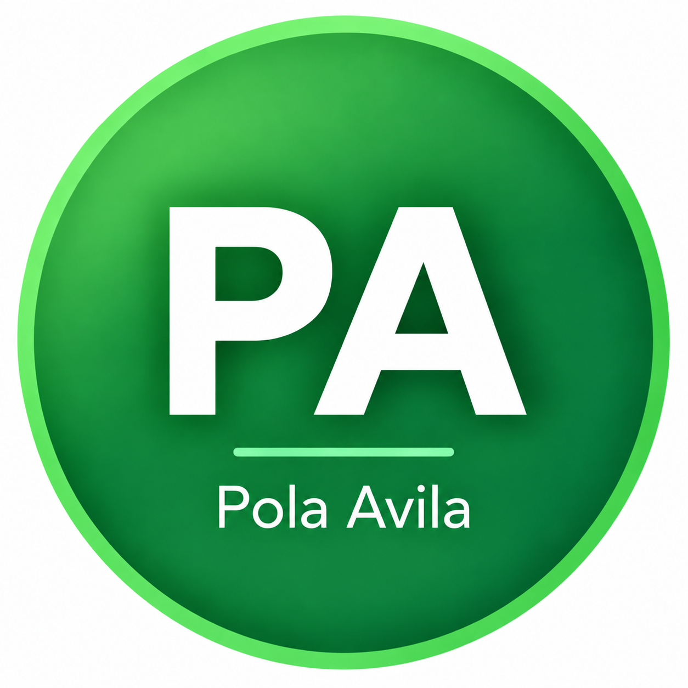
Encargada de Convivencia Educativa
Coordinador Enseñanza Técnico Profesional
Coordinadora del Programa de Integración Escolar (PIE) y de Cursos Especiales (Opción 4 y Opción 4 Laboral)
Espacio de participación y trabajo colaborativo de los distintos estamentos que forman parte de nuestra comunidad educativa.
El Consejo Escolar es un espacio de participación, coordinación y trabajo colaborativo que reúne a representantes de los distintos estamentos de la comunidad educativa.
Su propósito es favorecer la participación de los diferentes actores de la comunidad escolar, promoviendo el diálogo, la colaboración y la construcción conjunta de iniciativas que contribuyan al mejoramiento de la vida escolar.
Aportan desde su experiencia pedagógica y profesional, contribuyendo al análisis de las necesidades educativas y al desarrollo de acciones que favorezcan los aprendizajes y la formación integral de los estudiantes.
Representan la voz de las familias y contribuyen con sus opiniones, propuestas y experiencias al fortalecimiento de la relación entre la familia y el establecimiento.
Participan aportando sus opiniones, necesidades e iniciativas, fortaleciendo la representación estudiantil y su participación activa en la comunidad educativa.
Aportan desde sus diferentes funciones y experiencias, contribuyendo al funcionamiento institucional, la convivencia y el bienestar de los integrantes de la comunidad educativa.
Contribuye desde una perspectiva inclusiva al desarrollo de estrategias y acciones que favorezcan la participación, el aprendizaje y el bienestar de los estudiantes.
Representa y canaliza las inquietudes, propuestas y necesidades de los integrantes del estamento correspondiente, favoreciendo la comunicación y participación organizada.
Servicio Local de Educación Pública de Atacama, en su calidad de empleador y sostenedor del establecimiento, participa desde su rol institucional y de apoyo a la gestión educativa.
El trabajo del Consejo Escolar busca fortalecer la comunicación y colaboración entre los distintos actores de la comunidad educativa, reconociendo que cada estamento tiene un rol importante en la construcción de una escuela inclusiva, participativa y comprometida con su territorio.
La participación de sus integrantes permite recoger diferentes perspectivas y contribuir al desarrollo de acciones orientadas al mejoramiento de los procesos educativos, la convivencia y el bienestar de toda la comunidad escolar.
Consulta los documentos institucionales, planes y reglamentos que orientan el funcionamiento y los procedimientos de nuestra comunidad educativa.
Presenta la identidad, misión, visión y orientaciones que guían el proyecto educativo del establecimiento.
Abrir aquí para ver el documentoEstablece las normas de convivencia, derechos, deberes y procedimientos que orientan la vida escolar.
Abrir aquí para ver el documentoOrganiza las acciones y prioridades de mejora para fortalecer los aprendizajes y la gestión escolar.
Abrir aquí para ver el documentoOrienta las acciones para promover el buen trato, la participación y una convivencia escolar respetuosa.
Abrir aquí para ver el documentoPropone acciones para favorecer la participación, la equidad y la atención a la diversidad de estudiantes.
Abrir aquí para ver el documentoOrienta la formación integral en afectividad, sexualidad, respeto y relaciones responsables, de acuerdo con las etapas de desarrollo.
Abrir aquí para ver el documentoPromueve la participación democrática, el respeto por los derechos y deberes y el compromiso con la comunidad.
Abrir aquí para ver el documentoOrienta las acciones de formación y trabajo colaborativo para fortalecer las prácticas pedagógicas del equipo docente.
Abrir aquí para ver el documentoPresenta las normas de uso, préstamo y cuidado de los recursos de la biblioteca escolar.
Abrir aquí para ver el documentoEstablece normas laborales, de orden, higiene y seguridad aplicables al personal del SLEP Atacama.
Abrir aquí para ver el documentoInformación preventiva, material de apoyo y documentos relacionados con la seguridad de nuestra comunidad educativa.
Documento institucional que orienta la prevención, preparación y respuesta ante situaciones de emergencia.
Ver PISEMaterial gráfico de apoyo para la prevención y la respuesta ante situaciones de emergencia dentro de la comunidad educativa.
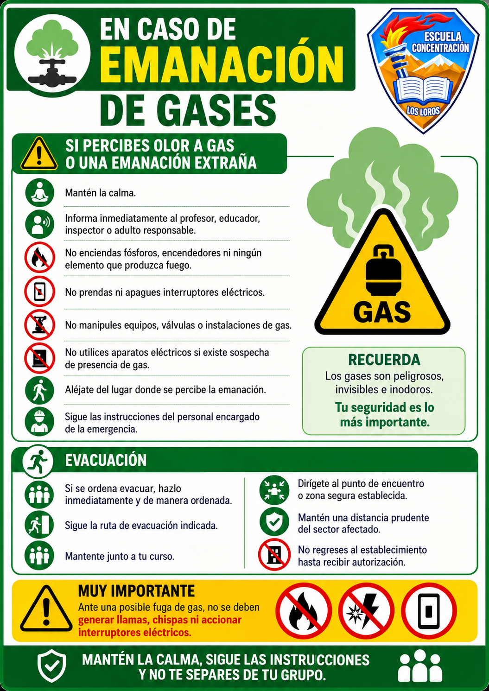


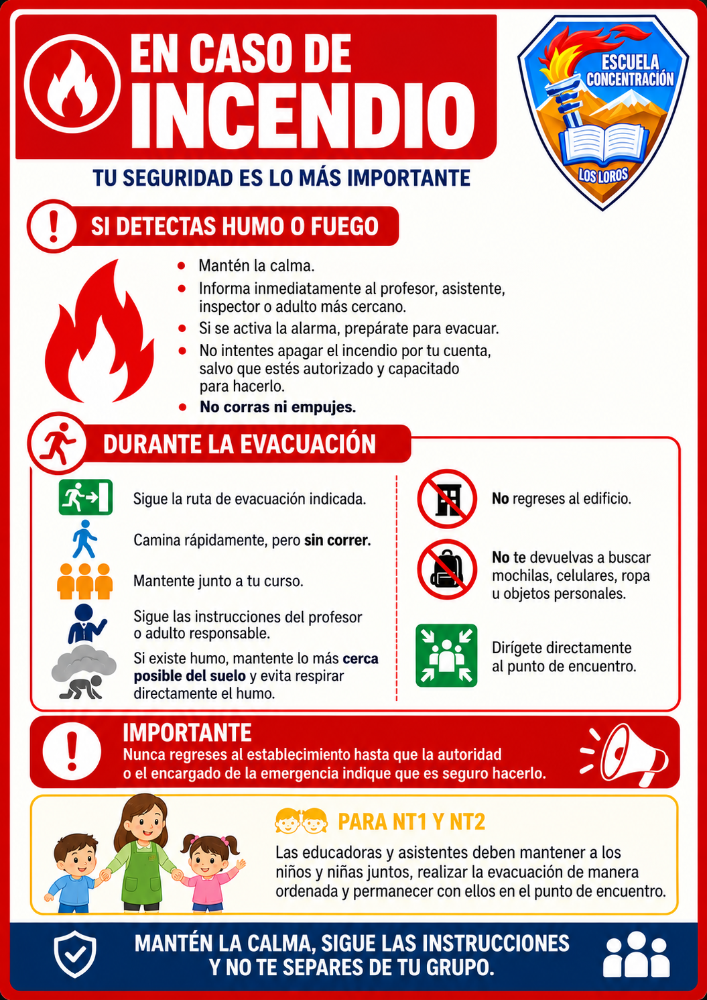
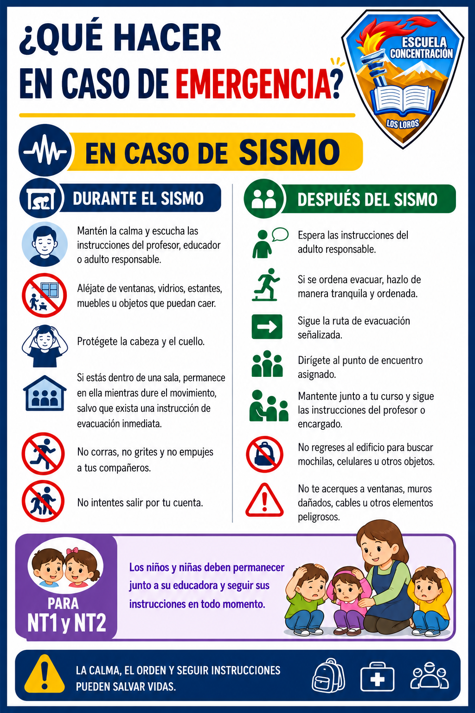
Protocolos de actuación del establecimiento educacional.
Encuentra aquí nuestra información de contacto y ubicación.
Calle Ferrocarril 175A
Los Loros
Escuela de Concentración Los Loros
Encuentra nuestro establecimiento en el mapa.
Formulario para que padres, madres y apoderados puedan registrar una justificación de inasistencia.
Generaciones de estudiantes han sido parte de una comunidad educativa vinculada a Los Loros, su territorio y su desarrollo.
Guarda la página en tu teléfono y ábrela como una aplicación.
No necesitas descargar un APK ni activar “orígenes desconocidos”. La instalación se realiza desde el navegador.
Busca secciones, horarios, documentos, protocolos y contenidos.
El archivo no está disponible en este momento. Puede estar actualizándose o aún no haber sido publicado.